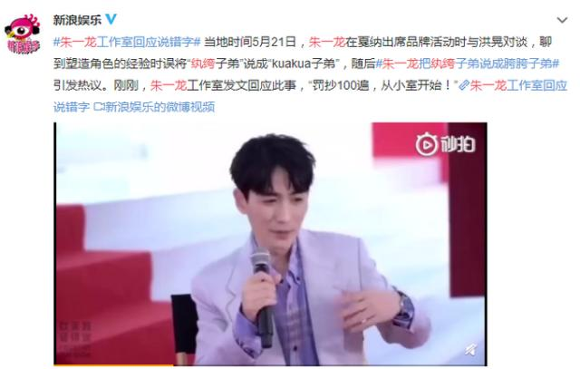
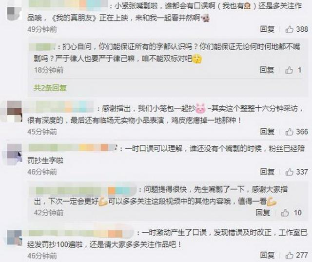

朱一龙回应念错字，把纨绔子弟说成胯胯子弟，工作室给出惩罚标准
5月21日，朱一龙在戛纳出席品牌活动时与洪晃对谈，聊到塑造角色的经验时误将“纨绔子弟”说成“kuakua子弟”，随后#朱一龙把纨绔子弟说成胯胯子弟#引发热议。
刚刚，朱一龙工作室发文回应此事，“罚抄100遍，从小室开始!”
网友表示：“态度挺好的呀。”“ 其实口误挺正常的。”“明星也有缺点，这是一时嘴瓢可以谅解。”
也有网友认为，喜欢朱一龙 的颜，但是真心接受不了这种明显的错误。那么你能接受偶像念错字吗？
朱一龙
1988年4月16日出生于湖北武汉，中国内地男演员，毕业于北京电影学院2006级表演系本科。
2009年出演电影《再生缘》；2010年主演亚洲首部IMAX3D电影《大明宫传奇》，在剧中饰演君实将军，同年，出演明朝宫廷剧《大明嫔妃》；2012年主演电视剧《家宴》 ，饰演冯豆子。2013年主演民国情感剧《情定三生》，在剧中饰演迟瑞。2014年3月出演都市青春剧《我的爱对你说》，饰演樊伟；9月出演古龙武侠巨制《萧十一郎》，饰演连城璧；10月出演大型古装历史剧《芈月传》，饰演秦王嬴稷。 2016年2月，在古装武侠剧《新萧十一郎》中饰演风采翩翩、文武兼备的无垢山庄少庄主连城璧 ；7月，在武侠小说《新边城浪子》中饰演黑衣黑刀傅红雪 。2017年10月20日，其参演的《胡杨的夏天》在中国上映；11月3日，其参演的《密战》在中国内地上映。2018年6月13日，《镇魂》首播，朱一龙在剧中一人分饰三角，饰演龙城大学生物工程系教授沈巍、黑袍使和夜尊。6月17日，获得2018微博之夜微博人气演员奖；随后，参演都市剧《我的真朋友》，化身室内设计师为梦想执笔 。12月25日，参演的电视剧《知否？知否？应是绿肥红瘦》播出，在剧中饰演齐衡。2019年1月1日，获2018国剧盛典青春演技魅力男演员奖。
来源：北晚新视觉综合 舜网 封面新闻 网友评论 百科